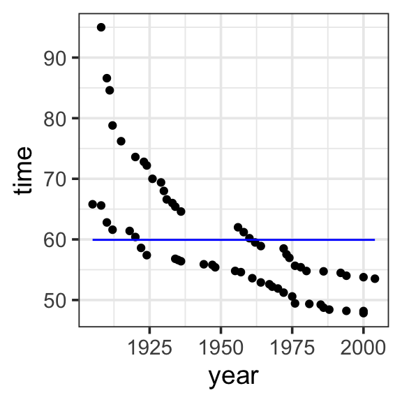
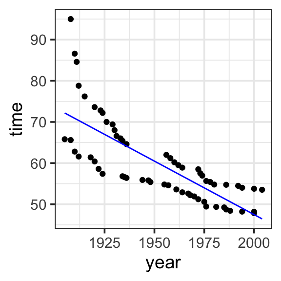
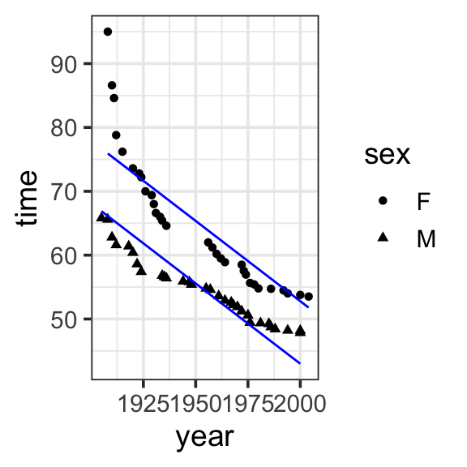
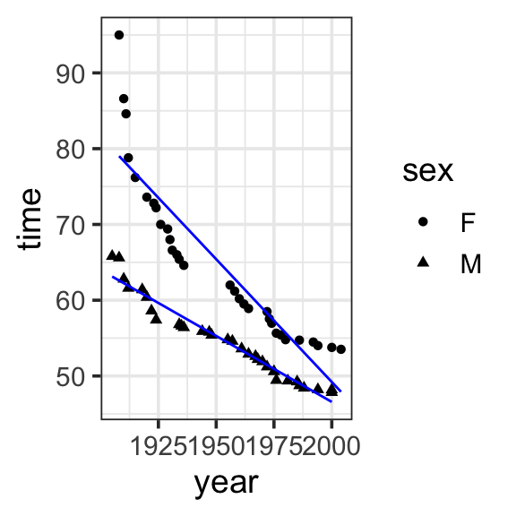

library(tidyverse)
library(mosaic)Applied model specification
Under construction
Still working on this!
Now that we’ve covered the terminology and concepts, let’s apply model specification to some real models.
1 “Toy” data
Let’s start with the simplest possible example, a dataset with two data points. Suppose you record how many days you study over the next two days. On day 1, you study for 2 hours. On day 2, you study for 3 hours. Your dataset might look something like this.

function (object, ...)
{
UseMethod("model")
}
<bytecode: 0x135afaaa0>
<environment: namespace:mosaic>toy_data <- tibble(
x = c(1, 2, 3, 4, 5),
y = c(2, 6, 7, 12, 13)
)
toy_data %>%
ggplot(aes(x = x, y = y)) +
geom_point() +
theme_bw(base_size = 14) - Specify our response variable, \(y\): the response variable (🥸 data, output, prediction) is the variable you are trying to predict or explain with your model.
y
- Specify explantory variables, \(x_i\): the explanatory variables (🥸 regressors, inputs, predictors) are the predictors in your data that could help explain the response variable. Our data has only one possible:
x
- Specify the functional form: the functional form describes the relationship between the response and explanatory variables with a mathematical expresson. In a linear model, we express this relationship as a weighted sum of inputs:
- \(y=\sum_{i=1}^{n}w_ix_i\)
- Specify model terms: here we need to specify exactly how to express our explanatory variables in our functional form. The actual variables and constants that will be included in the model. There are four kinds of terms: (1) intercept, (2) main, (3) interaction, and (4) transformation. Here we have the simplest case of an intercept and one main term (no interactions or transformations necessary)
- \(y = w_1\mathbf{1} + w_2x_2\)
- in R:
y ~ 1 + x

Model specification:
\(y = w_1\cdot\mathbf{1} + w_2\cdot\mathbf{x}\)
Call:
lm(formula = y ~ 1 + x, data = toy_data)
Coefficients:
(Intercept) x
-0.4 2.8 Fitted model:
\(y = -0.4\cdot1 + 2.8\cdot x\)
Call:
lm(formula = y ~ 1 + x, data = toy_data)
Coefficients:
(Intercept) x
-0.4 2.8 model <- lm(y ~ 1 + x, data = toy_data)
toy_data <- toy_data %>%
mutate(with_formula = -0.4*1 + 2.8*x) %>%
mutate(with_predict= predict(model, toy_data))
toy_data %>%
ggplot(aes(x = x, y = y)) +
geom_point() +
geom_line(aes(y = with_predict), color = "blue") +
theme_bw(base_size = 14) 2 Swim records
2.1 One input

Model specification:
\(y = w_1\cdot\mathbf{1}\)
Call:
lm(formula = time ~ 1, data = SwimRecords)
Coefficients:
(Intercept)
59.92 Fitted model:
\(y = (59.92)1\)
| year | time | sex | with_formula | with_predict |
|---|---|---|---|---|
| 1905 | 65.80 | M | 59.92 | 59.92419 |
| 1908 | 65.60 | M | 59.92 | 59.92419 |
| 1910 | 62.80 | M | 59.92 | 59.92419 |
| 1912 | 61.60 | M | 59.92 | 59.92419 |
| 1918 | 61.40 | M | 59.92 | 59.92419 |
| 1920 | 60.40 | M | 59.92 | 59.92419 |
| 1922 | 58.60 | M | 59.92 | 59.92419 |
| 1924 | 57.40 | M | 59.92 | 59.92419 |
| 1934 | 56.80 | M | 59.92 | 59.92419 |
| 1935 | 56.60 | M | 59.92 | 59.92419 |
| 1936 | 56.40 | M | 59.92 | 59.92419 |
| 1944 | 55.90 | M | 59.92 | 59.92419 |
| 1947 | 55.80 | M | 59.92 | 59.92419 |
| 1948 | 55.40 | M | 59.92 | 59.92419 |
| 1955 | 54.80 | M | 59.92 | 59.92419 |
| 1957 | 54.60 | M | 59.92 | 59.92419 |
| 1961 | 53.60 | M | 59.92 | 59.92419 |
| 1964 | 52.90 | M | 59.92 | 59.92419 |
| 1967 | 52.60 | M | 59.92 | 59.92419 |
| 1968 | 52.20 | M | 59.92 | 59.92419 |
| 1970 | 51.90 | M | 59.92 | 59.92419 |
| 1972 | 51.22 | M | 59.92 | 59.92419 |
| 1975 | 50.59 | M | 59.92 | 59.92419 |
| 1976 | 49.44 | M | 59.92 | 59.92419 |
| 1981 | 49.36 | M | 59.92 | 59.92419 |
| 1985 | 49.24 | M | 59.92 | 59.92419 |
| 1986 | 48.74 | M | 59.92 | 59.92419 |
| 1988 | 48.42 | M | 59.92 | 59.92419 |
| 1994 | 48.21 | M | 59.92 | 59.92419 |
| 2000 | 48.18 | M | 59.92 | 59.92419 |
| 2000 | 47.84 | M | 59.92 | 59.92419 |
| 1908 | 95.00 | F | 59.92 | 59.92419 |
| 1910 | 86.60 | F | 59.92 | 59.92419 |
| 1911 | 84.60 | F | 59.92 | 59.92419 |
| 1912 | 78.80 | F | 59.92 | 59.92419 |
| 1915 | 76.20 | F | 59.92 | 59.92419 |
| 1920 | 73.60 | F | 59.92 | 59.92419 |
| 1923 | 72.80 | F | 59.92 | 59.92419 |
| 1924 | 72.20 | F | 59.92 | 59.92419 |
| 1926 | 70.00 | F | 59.92 | 59.92419 |
| 1929 | 69.40 | F | 59.92 | 59.92419 |
| 1930 | 68.00 | F | 59.92 | 59.92419 |
| 1931 | 66.60 | F | 59.92 | 59.92419 |
| 1933 | 66.00 | F | 59.92 | 59.92419 |
| 1934 | 65.40 | F | 59.92 | 59.92419 |
| 1936 | 64.60 | F | 59.92 | 59.92419 |
| 1956 | 62.00 | F | 59.92 | 59.92419 |
| 1958 | 61.20 | F | 59.92 | 59.92419 |
| 1960 | 60.20 | F | 59.92 | 59.92419 |
| 1962 | 59.50 | F | 59.92 | 59.92419 |
| 1964 | 58.90 | F | 59.92 | 59.92419 |
| 1972 | 58.50 | F | 59.92 | 59.92419 |
| 1973 | 57.54 | F | 59.92 | 59.92419 |
| 1974 | 56.96 | F | 59.92 | 59.92419 |
| 1976 | 55.65 | F | 59.92 | 59.92419 |
| 1978 | 55.41 | F | 59.92 | 59.92419 |
| 1980 | 54.79 | F | 59.92 | 59.92419 |
| 1986 | 54.73 | F | 59.92 | 59.92419 |
| 1992 | 54.48 | F | 59.92 | 59.92419 |
| 1994 | 54.01 | F | 59.92 | 59.92419 |
| 2000 | 53.77 | F | 59.92 | 59.92419 |
| 2004 | 53.52 | F | 59.92 | 59.92419 |
model <- lm(time ~ 1, data = SwimRecords)
SwimRecords_predict <- SwimRecords %>%
mutate(with_formula = 59.92*1) %>%
mutate(with_predict= predict(model, SwimRecords))
SwimRecords_predict %>%
ggplot(aes(x = year, y = time)) +
geom_point() +
geom_line(aes(y = with_predict), color = "blue") +
theme_bw(base_size = 14) 2.2 Two inputs

Model specification:
\(y = w_1\cdot\mathbf{1} + w_2\cdot\mathbf{year}\)
Call:
lm(formula = time ~ 1 + year, data = SwimRecords)
Coefficients:
(Intercept) year
567.2420 -0.2599 Fitted model:
\(y = (567.2420)\mathbf{1} + (-0.2599)\mathbf{year}\)
| year | time | sex | with_formula | with_predict |
|---|---|---|---|---|
| 1905 | 65.80 | M | 72.1325 | 72.17614 |
| 1908 | 65.60 | M | 71.3528 | 71.39651 |
| 1910 | 62.80 | M | 70.8330 | 70.87676 |
| 1912 | 61.60 | M | 70.3132 | 70.35700 |
| 1918 | 61.40 | M | 68.7538 | 68.79774 |
| 1920 | 60.40 | M | 68.2340 | 68.27798 |
| 1922 | 58.60 | M | 67.7142 | 67.75823 |
| 1924 | 57.40 | M | 67.1944 | 67.23848 |
| 1934 | 56.80 | M | 64.5954 | 64.63971 |
| 1935 | 56.60 | M | 64.3355 | 64.37983 |
| 1936 | 56.40 | M | 64.0756 | 64.11995 |
| 1944 | 55.90 | M | 61.9964 | 62.04093 |
| 1947 | 55.80 | M | 61.2167 | 61.26130 |
| 1948 | 55.40 | M | 60.9568 | 61.00143 |
| 1955 | 54.80 | M | 59.1375 | 59.18229 |
| 1957 | 54.60 | M | 58.6177 | 58.66253 |
| 1961 | 53.60 | M | 57.5781 | 57.62302 |
| 1964 | 52.90 | M | 56.7984 | 56.84339 |
| 1967 | 52.60 | M | 56.0187 | 56.06376 |
| 1968 | 52.20 | M | 55.7588 | 55.80388 |
| 1970 | 51.90 | M | 55.2390 | 55.28413 |
| 1972 | 51.22 | M | 54.7192 | 54.76438 |
| 1975 | 50.59 | M | 53.9395 | 53.98474 |
| 1976 | 49.44 | M | 53.6796 | 53.72487 |
| 1981 | 49.36 | M | 52.3801 | 52.42548 |
| 1985 | 49.24 | M | 51.3405 | 51.38597 |
| 1986 | 48.74 | M | 51.0806 | 51.12610 |
| 1988 | 48.42 | M | 50.5608 | 50.60634 |
| 1994 | 48.21 | M | 49.0014 | 49.04708 |
| 2000 | 48.18 | M | 47.4420 | 47.48782 |
| 2000 | 47.84 | M | 47.4420 | 47.48782 |
| 1908 | 95.00 | F | 71.3528 | 71.39651 |
| 1910 | 86.60 | F | 70.8330 | 70.87676 |
| 1911 | 84.60 | F | 70.5731 | 70.61688 |
| 1912 | 78.80 | F | 70.3132 | 70.35700 |
| 1915 | 76.20 | F | 69.5335 | 69.57737 |
| 1920 | 73.60 | F | 68.2340 | 68.27798 |
| 1923 | 72.80 | F | 67.4543 | 67.49835 |
| 1924 | 72.20 | F | 67.1944 | 67.23848 |
| 1926 | 70.00 | F | 66.6746 | 66.71872 |
| 1929 | 69.40 | F | 65.8949 | 65.93909 |
| 1930 | 68.00 | F | 65.6350 | 65.67921 |
| 1931 | 66.60 | F | 65.3751 | 65.41934 |
| 1933 | 66.00 | F | 64.8553 | 64.89958 |
| 1934 | 65.40 | F | 64.5954 | 64.63971 |
| 1936 | 64.60 | F | 64.0756 | 64.11995 |
| 1956 | 62.00 | F | 58.8776 | 58.92241 |
| 1958 | 61.20 | F | 58.3578 | 58.40266 |
| 1960 | 60.20 | F | 57.8380 | 57.88290 |
| 1962 | 59.50 | F | 57.3182 | 57.36315 |
| 1964 | 58.90 | F | 56.7984 | 56.84339 |
| 1972 | 58.50 | F | 54.7192 | 54.76438 |
| 1973 | 57.54 | F | 54.4593 | 54.50450 |
| 1974 | 56.96 | F | 54.1994 | 54.24462 |
| 1976 | 55.65 | F | 53.6796 | 53.72487 |
| 1978 | 55.41 | F | 53.1598 | 53.20511 |
| 1980 | 54.79 | F | 52.6400 | 52.68536 |
| 1986 | 54.73 | F | 51.0806 | 51.12610 |
| 1992 | 54.48 | F | 49.5212 | 49.56683 |
| 1994 | 54.01 | F | 49.0014 | 49.04708 |
| 2000 | 53.77 | F | 47.4420 | 47.48782 |
| 2004 | 53.52 | F | 46.4024 | 46.44831 |
model <- lm(time ~ 1 + year, data = SwimRecords)
SwimRecords_predict <- SwimRecords %>%
mutate(with_formula = 567.2420*1 + -0.2599*year) %>%
mutate(with_predict= predict(model, SwimRecords))
SwimRecords_predict %>%
ggplot(aes(x = year, y = time)) +
geom_point() +
geom_line(aes(y = with_predict), color = "blue") +
theme_bw(base_size = 14) 2.3 Three inputs
Warning: There was 1 warning in `mutate()`.
ℹ In argument: `with_formula = 555.7168 * 1 + -0.2515 * year + -9.798 * sex`.
Caused by warning in `Ops.factor()`:
! '*' not meaningful for factors
Model specification:
\(y = w_1\cdot\mathbf{1} + w_2\cdot\mathbf{year} + w_3\cdot\mathbf{sex}\)
Call:
lm(formula = time ~ 1 + year + sex, data = SwimRecords)
Coefficients:
(Intercept) year sexM
555.7168 -0.2515 -9.7980 Fitted model:
\(y = (555.7168)\mathbf{1} + (-0.2515 )\mathbf{year} + (-9.7980)\mathbf{sex}\)
| year | time | sex | with_formula | with_predict |
|---|---|---|---|---|
| 1905 | 65.80 | M | NA | 66.88051 |
| 1908 | 65.60 | M | NA | 66.12612 |
| 1910 | 62.80 | M | NA | 65.62319 |
| 1912 | 61.60 | M | NA | 65.12026 |
| 1918 | 61.40 | M | NA | 63.61148 |
| 1920 | 60.40 | M | NA | 63.10855 |
| 1922 | 58.60 | M | NA | 62.60563 |
| 1924 | 57.40 | M | NA | 62.10270 |
| 1934 | 56.80 | M | NA | 59.58806 |
| 1935 | 56.60 | M | NA | 59.33660 |
| 1936 | 56.40 | M | NA | 59.08513 |
| 1944 | 55.90 | M | NA | 57.07343 |
| 1947 | 55.80 | M | NA | 56.31903 |
| 1948 | 55.40 | M | NA | 56.06757 |
| 1955 | 54.80 | M | NA | 54.30732 |
| 1957 | 54.60 | M | NA | 53.80440 |
| 1961 | 53.60 | M | NA | 52.79854 |
| 1964 | 52.90 | M | NA | 52.04415 |
| 1967 | 52.60 | M | NA | 51.28976 |
| 1968 | 52.20 | M | NA | 51.03830 |
| 1970 | 51.90 | M | NA | 50.53537 |
| 1972 | 51.22 | M | NA | 50.03244 |
| 1975 | 50.59 | M | NA | 49.27805 |
| 1976 | 49.44 | M | NA | 49.02659 |
| 1981 | 49.36 | M | NA | 47.76927 |
| 1985 | 49.24 | M | NA | 46.76341 |
| 1986 | 48.74 | M | NA | 46.51195 |
| 1988 | 48.42 | M | NA | 46.00902 |
| 1994 | 48.21 | M | NA | 44.50024 |
| 2000 | 48.18 | M | NA | 42.99146 |
| 2000 | 47.84 | M | NA | 42.99146 |
| 1908 | 95.00 | F | NA | 75.92408 |
| 1910 | 86.60 | F | NA | 75.42115 |
| 1911 | 84.60 | F | NA | 75.16969 |
| 1912 | 78.80 | F | NA | 74.91822 |
| 1915 | 76.20 | F | NA | 74.16383 |
| 1920 | 73.60 | F | NA | 72.90651 |
| 1923 | 72.80 | F | NA | 72.15212 |
| 1924 | 72.20 | F | NA | 71.90066 |
| 1926 | 70.00 | F | NA | 71.39773 |
| 1929 | 69.40 | F | NA | 70.64334 |
| 1930 | 68.00 | F | NA | 70.39188 |
| 1931 | 66.60 | F | NA | 70.14041 |
| 1933 | 66.00 | F | NA | 69.63749 |
| 1934 | 65.40 | F | NA | 69.38602 |
| 1936 | 64.60 | F | NA | 68.88310 |
| 1956 | 62.00 | F | NA | 63.85382 |
| 1958 | 61.20 | F | NA | 63.35090 |
| 1960 | 60.20 | F | NA | 62.84797 |
| 1962 | 59.50 | F | NA | 62.34504 |
| 1964 | 58.90 | F | NA | 61.84211 |
| 1972 | 58.50 | F | NA | 59.83040 |
| 1973 | 57.54 | F | NA | 59.57894 |
| 1974 | 56.96 | F | NA | 59.32748 |
| 1976 | 55.65 | F | NA | 58.82455 |
| 1978 | 55.41 | F | NA | 58.32162 |
| 1980 | 54.79 | F | NA | 57.81869 |
| 1986 | 54.73 | F | NA | 56.30991 |
| 1992 | 54.48 | F | NA | 54.80113 |
| 1994 | 54.01 | F | NA | 54.29820 |
| 2000 | 53.77 | F | NA | 52.78942 |
| 2004 | 53.52 | F | NA | 51.78357 |
model <- lm(time ~ 1 + year, data = SwimRecords)
SwimRecords_predict <- SwimRecords %>%
mutate(with_formula = 555.7168*1 + -0.2515*year + -9.7980 *sex) %>%
mutate(with_predict= predict(model, SwimRecords))
SwimRecords_predict %>%
ggplot(aes(x = year, y = time)) +
geom_point() +
geom_line(aes(y = with_predict), color = "blue") +
theme_bw(base_size = 14) 2.4 Interaction
[1] "F" "M"NULL
Model specification:
\(y = w_1\cdot\mathbf{1} + w_2\cdot\mathbf{year} + w_3\cdot\mathbf{sex} + w_4\cdot\mathbf{year\times{sex}}\)
Call:
lm(formula = time ~ 1 + year * sex, data = SwimRecords)
Coefficients:
(Intercept) year sexM year:sexM
697.3012 -0.3240 -302.4638 0.1499 Fitted model:
\(y = (697.3012)\mathbf{1} + (-0.3240)\mathbf{year} + (-302.4638)\mathbf{sex} + (0.1499)\mathbf{year\times{sex}}\)
| year | time | sex | with_formula | with_predict |
|---|---|---|---|---|
| 1905 | 65.80 | M | 46.2726 | 63.12106 |
| 1908 | 65.60 | M | 46.2000 | 62.59867 |
| 1910 | 62.80 | M | 46.1516 | 62.25041 |
| 1912 | 61.60 | M | 46.1032 | 61.90215 |
| 1918 | 61.40 | M | 45.9580 | 60.85738 |
| 1920 | 60.40 | M | 45.9096 | 60.50912 |
| 1922 | 58.60 | M | 45.8612 | 60.16086 |
| 1924 | 57.40 | M | 45.8128 | 59.81260 |
| 1934 | 56.80 | M | 45.5708 | 58.07131 |
| 1935 | 56.60 | M | 45.5466 | 57.89718 |
| 1936 | 56.40 | M | 45.5224 | 57.72305 |
| 1944 | 55.90 | M | 45.3288 | 56.33002 |
| 1947 | 55.80 | M | 45.2562 | 55.80763 |
| 1948 | 55.40 | M | 45.2320 | 55.63350 |
| 1955 | 54.80 | M | 45.0626 | 54.41459 |
| 1957 | 54.60 | M | 45.0142 | 54.06634 |
| 1961 | 53.60 | M | 44.9174 | 53.36982 |
| 1964 | 52.90 | M | 44.8448 | 52.84743 |
| 1967 | 52.60 | M | 44.7722 | 52.32504 |
| 1968 | 52.20 | M | 44.7480 | 52.15091 |
| 1970 | 51.90 | M | 44.6996 | 51.80266 |
| 1972 | 51.22 | M | 44.6512 | 51.45440 |
| 1975 | 50.59 | M | 44.5786 | 50.93201 |
| 1976 | 49.44 | M | 44.5544 | 50.75788 |
| 1981 | 49.36 | M | 44.4334 | 49.88723 |
| 1985 | 49.24 | M | 44.3366 | 49.19072 |
| 1986 | 48.74 | M | 44.3124 | 49.01659 |
| 1988 | 48.42 | M | 44.2640 | 48.66833 |
| 1994 | 48.21 | M | 44.1188 | 47.62355 |
| 2000 | 48.18 | M | 43.9736 | 46.57878 |
| 2000 | 47.84 | M | 43.9736 | 46.57878 |
| 1908 | 95.00 | F | 62.6546 | 79.02170 |
| 1910 | 86.60 | F | 62.3064 | 78.37361 |
| 1911 | 84.60 | F | 62.1323 | 78.04956 |
| 1912 | 78.80 | F | 61.9582 | 77.72552 |
| 1915 | 76.20 | F | 61.4359 | 76.75338 |
| 1920 | 73.60 | F | 60.5654 | 75.13315 |
| 1923 | 72.80 | F | 60.0431 | 74.16101 |
| 1924 | 72.20 | F | 59.8690 | 73.83697 |
| 1926 | 70.00 | F | 59.5208 | 73.18887 |
| 1929 | 69.40 | F | 58.9985 | 72.21674 |
| 1930 | 68.00 | F | 58.8244 | 71.89269 |
| 1931 | 66.60 | F | 58.6503 | 71.56864 |
| 1933 | 66.00 | F | 58.3021 | 70.92055 |
| 1934 | 65.40 | F | 58.1280 | 70.59651 |
| 1936 | 64.60 | F | 57.7798 | 69.94842 |
| 1956 | 62.00 | F | 54.2978 | 63.46750 |
| 1958 | 61.20 | F | 53.9496 | 62.81941 |
| 1960 | 60.20 | F | 53.6014 | 62.17131 |
| 1962 | 59.50 | F | 53.2532 | 61.52322 |
| 1964 | 58.90 | F | 52.9050 | 60.87513 |
| 1972 | 58.50 | F | 51.5122 | 58.28276 |
| 1973 | 57.54 | F | 51.3381 | 57.95872 |
| 1974 | 56.96 | F | 51.1640 | 57.63467 |
| 1976 | 55.65 | F | 50.8158 | 56.98658 |
| 1978 | 55.41 | F | 50.4676 | 56.33849 |
| 1980 | 54.79 | F | 50.1194 | 55.69040 |
| 1986 | 54.73 | F | 49.0748 | 53.74612 |
| 1992 | 54.48 | F | 48.0302 | 51.80185 |
| 1994 | 54.01 | F | 47.6820 | 51.15375 |
| 2000 | 53.77 | F | 46.6374 | 49.20948 |
| 2004 | 53.52 | F | 45.9410 | 47.91330 |
model <- lm(time ~ 1 + year, data = SwimRecords)
as.numeric(SwimRecords$sex)
levels(SwimRecords$sex)
SwimRecords_predict <- SwimRecords %>%
mutate(with_formula = 697.3012*1 + -0.3240*year +
-302.4638*as.numeric(sex) + 0.1499*(year*as.numeric(sex))
) %>%
mutate(with_predict= predict(model, SwimRecords))
SwimRecords_predict %>%
ggplot(aes(x = year, y = time)) +
geom_point() +
geom_line(aes(y = with_predict), color = "blue") +
theme_bw(base_size = 14) 2.5 Transformation

Model specification:
\[
y = w_1\cdot\mathbf{1} + w_2\cdot\mathbf{year} + w_3\cdot\mathbf{sex}+ w_4\cdot\mathbf{year\times{sex}} +w_5\cdot\mathbf{year}^2
\]
Call:
lm(formula = time ~ 1 + year * sex + I(year^2), data = SwimRecords)
Coefficients:
(Intercept) year sexM I(year^2) year:sexM
1.110e+04 -1.098e+01 -3.171e+02 2.729e-03 1.575e-01 Fitted model:
\[\begin{align}
y = &(1.110e+04)\mathbf{1} + (-1.098e+01)\mathbf{year} + (-3.171e+02)\mathbf{sex}\\
&+ (1.575e-01 )\mathbf{year\times{sex}} + (2.729e-03)\mathbf{year}^2
\end{align}\]
| year | time | sex | with_formula | with_predict |
|---|---|---|---|---|
| 1905 | 65.80 | M | 72.1325 | 66.81874 |
| 1908 | 65.60 | M | 71.3528 | 65.55576 |
| 1910 | 62.80 | M | 70.8330 | 64.74106 |
| 1912 | 61.60 | M | 70.3132 | 63.94819 |
| 1918 | 61.40 | M | 68.7538 | 61.70057 |
| 1920 | 60.40 | M | 68.2340 | 60.99502 |
| 1922 | 58.60 | M | 67.7142 | 60.31130 |
| 1924 | 57.40 | M | 67.1944 | 59.64941 |
| 1934 | 56.80 | M | 64.5954 | 56.66741 |
| 1935 | 56.60 | M | 64.3355 | 56.39922 |
| 1936 | 56.40 | M | 64.0756 | 56.13650 |
| 1944 | 55.90 | M | 61.9964 | 54.23115 |
| 1947 | 55.80 | M | 61.2167 | 53.60669 |
| 1948 | 55.40 | M | 60.9568 | 53.40946 |
| 1955 | 54.80 | M | 59.1375 | 52.18160 |
| 1957 | 54.60 | M | 58.6177 | 51.87991 |
| 1961 | 53.60 | M | 57.5781 | 51.34200 |
| 1964 | 52.90 | M | 56.7984 | 50.99587 |
| 1967 | 52.60 | M | 56.0187 | 50.69886 |
| 1968 | 52.20 | M | 55.7588 | 50.61078 |
| 1970 | 51.90 | M | 55.2390 | 50.45097 |
| 1972 | 51.22 | M | 54.7192 | 50.31300 |
| 1975 | 50.59 | M | 53.9395 | 50.14697 |
| 1976 | 49.44 | M | 53.6796 | 50.10254 |
| 1981 | 49.36 | M | 52.3801 | 49.96226 |
| 1985 | 49.24 | M | 51.3405 | 49.94827 |
| 1986 | 48.74 | M | 51.0806 | 49.95841 |
| 1988 | 48.42 | M | 50.5608 | 49.99508 |
| 1994 | 48.21 | M | 49.0014 | 50.23605 |
| 2000 | 48.18 | M | 47.4420 | 50.67349 |
| 2000 | 47.84 | M | 47.4420 | 50.67349 |
| 1908 | 95.00 | F | 71.3528 | 82.16082 |
| 1910 | 86.60 | F | 70.8330 | 81.03116 |
| 1911 | 84.60 | F | 70.5731 | 80.47451 |
| 1912 | 78.80 | F | 70.3132 | 79.92332 |
| 1915 | 76.20 | F | 69.5335 | 78.30250 |
| 1920 | 73.60 | F | 68.2340 | 75.71028 |
| 1923 | 72.80 | F | 67.4543 | 74.22044 |
| 1924 | 72.20 | F | 67.1944 | 73.73474 |
| 1926 | 70.00 | F | 66.6746 | 72.77971 |
| 1929 | 69.40 | F | 65.8949 | 71.38810 |
| 1930 | 68.00 | F | 65.6350 | 70.93515 |
| 1931 | 66.60 | F | 65.3751 | 70.48765 |
| 1933 | 66.00 | F | 64.8553 | 69.60903 |
| 1934 | 65.40 | F | 64.5954 | 69.17790 |
| 1936 | 64.60 | F | 64.0756 | 68.33203 |
| 1956 | 62.00 | F | 58.8776 | 61.07389 |
| 1958 | 61.20 | F | 58.3578 | 60.46814 |
| 1960 | 60.20 | F | 57.8380 | 59.88422 |
| 1962 | 59.50 | F | 57.3182 | 59.32213 |
| 1964 | 58.90 | F | 56.7984 | 58.78187 |
| 1972 | 58.50 | F | 54.7192 | 56.83913 |
| 1973 | 57.54 | F | 54.4593 | 56.62085 |
| 1974 | 56.96 | F | 54.1994 | 56.40802 |
| 1976 | 55.65 | F | 53.6796 | 55.99874 |
| 1978 | 55.41 | F | 53.1598 | 55.61129 |
| 1980 | 54.79 | F | 52.6400 | 55.24567 |
| 1986 | 54.73 | F | 51.0806 | 54.27978 |
| 1992 | 54.48 | F | 49.5212 | 53.51036 |
| 1994 | 54.01 | F | 49.0014 | 53.29755 |
| 2000 | 53.77 | F | 47.4420 | 52.79009 |
| 2004 | 53.52 | F | 46.4024 | 52.56093 |
model <- lm(time ~ 1 + year, data = SwimRecords)
SwimRecords_predict <- SwimRecords %>%
mutate(with_formula = 567.2420*1 + -0.2599*year) %>%
mutate(with_predict= predict(model, SwimRecords))
SwimRecords_predict %>%
ggplot(aes(x = year, y = time)) +
geom_point() +
geom_line(aes(y = with_predict), color = "blue") +
theme_bw(base_size = 14) 3 Brain size (log)
4 Plant heights (polynomials)
5 Further reading
- Ch 6: Language of models in Statistical Modeling